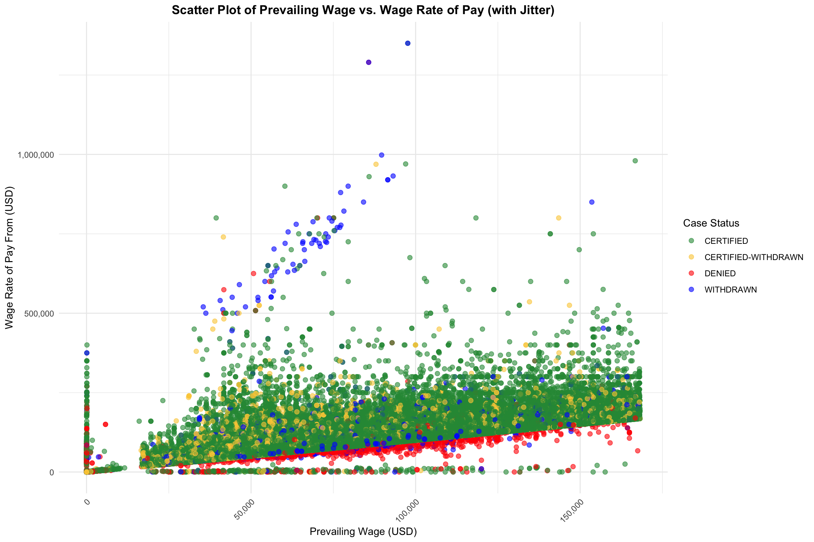
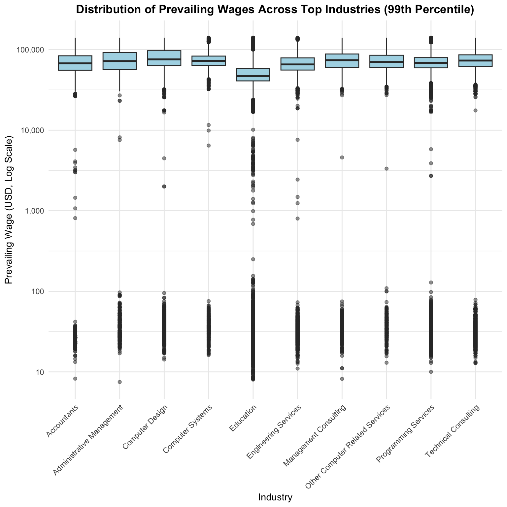
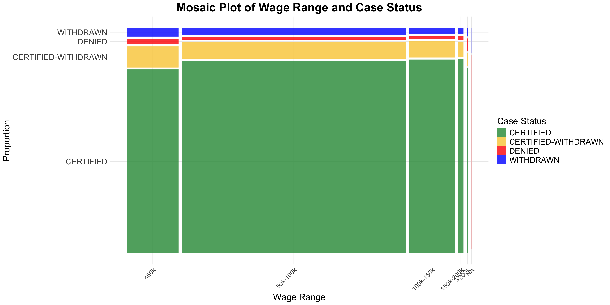
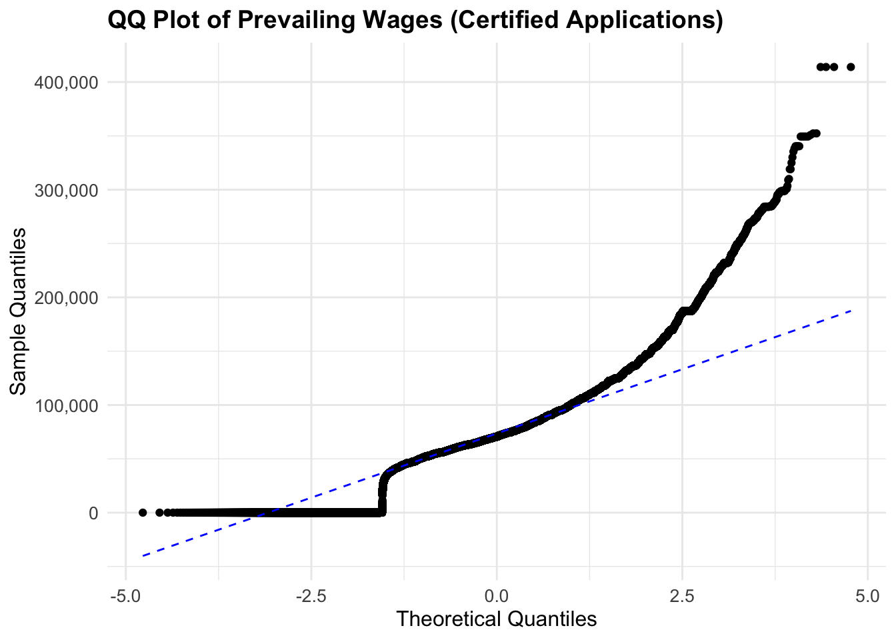

Code
# Load necessary libraries
library(ggplot2)
library(dplyr)
library(scales)
library(forcats)
library(RColorBrewer)
library(ggmosaic)
# Load the dataset
data <- read.csv("H1B_2017_cleaned.csv")# Load necessary libraries
library(ggplot2)
library(dplyr)
library(scales)
library(forcats)
library(RColorBrewer)
library(ggmosaic)
# Load the dataset
data <- read.csv("H1B_2017_cleaned.csv")# Convert DECISION_DATE to date format
data$DECISION_DATE <- as.Date(data$DECISION_DATE)
# Define quarters
data$Quarter <- cut(data$DECISION_DATE,
breaks = as.Date(c("2016-10-01", "2016-12-31", "2017-03-31", "2017-06-30", "2017-09-30")),
labels = c("Q4 2016", "Q1 2017", "Q2 2017", "Q3 2017"),
right = TRUE
)
# Filter data to include only the defined quarters
filtered_data <- data |> filter(!is.na(Quarter))
# Group and count case statuses by quarter
status_counts <- filtered_data |>
group_by(CASE_STATUS) |>
mutate(Total = n()) |> # Calculate total count for each CASE_STATUS
ungroup() |>
group_by(Quarter, CASE_STATUS) |>
summarise(Count = n(), .groups = "drop")
# Reorder CASE_STATUS by the total counts
status_counts$CASE_STATUS <- fct_rev(fct_reorder(status_counts$CASE_STATUS, status_counts$Count, .desc = TRUE))
# Define custom colors for each CASE_STATUS
custom_colors <- c(
"DENIED" = "red",
"WITHDRAWN" = "blue",
"CERTIFIED-WITHDRAWN" = "#facc43",
"CERTIFIED" = "#299643"
)
# Create the bar graph with custom colors
ggplot(status_counts, aes(x = Quarter, y = Count, fill = CASE_STATUS)) +
geom_bar(stat = "identity", position = "stack") +
scale_fill_manual(values = custom_colors) + # Apply custom colors
labs(
title = "H1B Case Status Distribution by Quarter (2016-2017)",
x = "Quarter",
y = "Number of Cases",
fill = "Case Status"
) +
theme_minimal() +
theme(axis.text.x = element_text(angle = 0, hjust = 0.5)) +
scale_y_continuous(labels = comma)Dominance of Certified Cases: Across all quarters shown (Q4 2016 through Q3 2017), the green bar representing CERTIFIED cases dominates the distribution. Even in the lowest volume quarters, the majority of processed cases were approved, suggesting a strong tendency towards granting H-1B visas when petitions are properly filed and meet criteria.
Quarterly Volume Fluctuations: • Q1 2017 Surge: There’s a pronounced spike in total cases during Q1 2017. The total number of cases processed (over 300,000) in this quarter is roughly three times that of Q4 2016 and significantly higher than Q2 and Q3 2017.
• Stable Lower Volumes in Other Quarters: Q4 2016, Q2 2017, and Q3 2017 show more moderate and relatively similar total volumes, hovering around the 100,000-case mark.Consistency in Status Proportions (beyond Certified): While the largest category (CERTIFIED) overshadows the rest, the relative proportions of DENIED, WITHDRAWN, and CERTIFIED-WITHDRAWN appear fairly steady. Each of these categories consistently represents a small fraction of total cases, implying that the big story lies in when and how many cases are processed, rather than dramatic shifts in approval vs. denial rates from one quarter to another.
Potential Seasonal or Policy-Related Timing: The Q1 2017 peak likely corresponds with the period when the bulk of petitions for the next fiscal cycle are being processed, reflecting the U.S. government’s typical schedule for reviewing the large volume of H-1B cap-subject petitions submitted in early April of the preceding year. While the chart doesn’t show exact submission dates, it strongly suggests a seasonal pattern in H-1B case volume and finalization.
The graph shows a consistent proportion of approvals across quarters, with minor fluctuations in denials and withdrawals. This consistency suggests that, despite a government transition in early 2017, there was no immediate or drastic shift in policy enforcement affecting case outcomes. However, the high number of withdrawn petitions in Q1 2017 could indicate some uncertainty among employers or applicants regarding policy direction under the new administration, leading them to reconsider or withdraw applications during this critical period.
# NAICS Code to Industry Name Mapping
naics_to_industry <- c(
"541211" = "Accountants",
"541330" = "Engineering Services",
"54151" = "Computer Systems",
"541511" = "Programming Services",
"541512" = "Computer Design",
"541519" = "Other Computer Related Services",
"5416" = "Technical Consulting",
"54161" = "Management Consulting",
"541611" = "Administrative Management",
"611310" = "Education"
)
# Group and count case statuses by NAICS_CODE (Industry)
industry_counts <- filtered_data |>
group_by(NAICS_CODE, CASE_STATUS) |>
summarise(Count = n(), .groups = "drop") |>
group_by(NAICS_CODE) |>
mutate(Total_Certified = sum(Count[CASE_STATUS == "CERTIFIED"])) |>
ungroup()
# Select the top 10 industries by "Certified" applications
top_industries <- industry_counts |>
filter(!is.na(NAICS_CODE)) |> # Remove NA industries
arrange(desc(Total_Certified)) |>
distinct(NAICS_CODE, Total_Certified) |>
slice_head(n = 10)
# Filter the data to include only the top 10 industries
top_industry_data <- industry_counts |>
filter(NAICS_CODE %in% top_industries$NAICS_CODE)
# Map the NAICS_CODE values to their corresponding Industry names
top_industry_data$Industry_Name <- naics_to_industry[as.character(top_industry_data$NAICS_CODE)]
# Print the unique pairs of NAICS_CODE and Industry_Name
unique_industries <- unique(top_industry_data[, c("NAICS_CODE", "Industry_Name")])
# Map NAICS_CODE values to corresponding Industry names
top_industry_data$Industry_Name <- naics_to_industry[as.character(top_industry_data$NAICS_CODE)]
# Create Cleveland dot plots faceted by CASE_STATUS
ggplot(top_industry_data, aes(
x = Count,
y = reorder(Industry_Name, Total_Certified) # Order by Total Certified
)) +
geom_point(aes(color = CASE_STATUS), size = 3) +
facet_wrap(~ CASE_STATUS, scales = "free_x") + # Facet by case status
scale_color_manual(values = custom_colors) + # Use custom colors for CASE_STATUS
labs(
title = "Top 10 Industries by Applications (Faceted by Case Status)",
x = "Number of Applications",
y = "Industry",
color = "Case Status"
) +
theme_minimal() +
theme(
axis.text.y = element_text(size = 10),
axis.text.x = element_text(size = 8),
strip.text = element_text(size = 10, face = "bold"),
plot.title = element_text(size = 14, face = "bold")
)
1. Dominance of CERTIFIED Applications in Technology-Driven Industries: Programming Services and Computer Design industries account for the majority of CERTIFIED applications, with Programming Services showing significantly higher numbers than other sectors. Other tech-related sectors, such as Technical Consulting and Computer Systems, also have strong representation, highlighting the demand for tech talent.
These industries have consistently relied on the H-1B program to fill skill gaps, particularly for specialized roles like software developers, systems analysts, and IT consultants.
2. Proportionately Low CERTIFIED-WITHDRAWN Applications: Compared to CERTIFIED, the number of CERTIFIED-WITHDRAWN applications is much smaller across all industries. However, the same industries dominate this category, indicating that companies in Programming Services and Computer Design might face internal or external factors leading to withdrawal post-approval.
3. Concentration of DENIALS in Tech Industries: The Programming Services and Computer Design industries also show the highest number of DENIED applications, suggesting stricter scrutiny or potential issues in petition filings for these sectors.
This could be due to several factors, including:
• Higher scrutiny of petitions in these industries due to past instances of program misuse.
• Complex job descriptions or role justifications that fail to meet the “specialty occupation” criteria.
• Increased competition leading to marginal cases being rejected.
Education also features among the industries with notable denials. Denials may stem from challenges in meeting prevailing wage requirements or providing sufficient documentation of role specialization
4. WITHDRAWN Petitions Show Industry Variance: While WITHDRAWN cases are present across all industries, Programming Services again leads. The high volume in tech-focused sectors could reflect dynamic project needs or strategic employer decisions in response to changing business conditions or policy uncertainties.
5. Non-Tech Representation Is Limited but Present: Non-tech industries like Education, Engineering Services, and Accountants appear across all categories but in significantly smaller numbers. These industries seem to have lower rejection and withdrawal rates, possibly due to clearer alignment with eligibility criteria or smaller petition volumes overall.filtered_data <- filtered_data |>
mutate(
Period = ifelse(
DECISION_DATE < as.Date("2017-01-20"),
"Pre-Trump (Oct 2016 - Jan 2017)",
"Post-Trump (Jan 2017 - Sep 2017)"
)
)
# Load US state boundaries
us_states <- map_data("state")
# Prepare state abbreviations to full names mapping
state_abbrev <- data.frame(
EMPLOYER_STATE = state.abb,
region = tolower(state.name)
)
# Aggregate data by EMPLOYER_STATE and Period
state_period_data <- filtered_data |>
group_by(EMPLOYER_STATE, Period) |>
summarise(
Total_Applications = n(),
Certified_Applications = sum(CASE_STATUS == "CERTIFIED", na.rm = TRUE)
) |>
ungroup()
# Map state abbreviations to full names
state_period_data <- state_period_data |>
left_join(state_abbrev, by = "EMPLOYER_STATE")
# Join with map data
map_data <- us_states |>
left_join(state_period_data, by = "region")
# Plot pre-Trump map with "YlGnBu" color scheme
ggplot(filter(map_data, Period == "Pre-Trump (Oct 2016 - Jan 2017)"),
aes(x = long, y = lat, group = group, fill = Total_Applications)) +
geom_polygon(color = "white") +
scale_fill_distiller(
palette = "YlGnBu",
name = "Total Applications",
direction = 1,
na.value = "grey50"
) +
labs(
title = "H1B Applications by State (Pre-Trump Period)",
subtitle = "Oct 2016 - Jan 2017",
x = "",
y = ""
) +
theme_minimal() +
theme(
axis.text = element_blank(),
axis.ticks = element_blank(),
panel.grid = element_blank()
)# Plot post-Trump map with the same color scheme
ggplot(filter(map_data, Period == "Post-Trump (Jan 2017 - Sep 2017)"),
aes(x = long, y = lat, group = group, fill = Total_Applications)) +
geom_polygon(color = "white") +
scale_fill_distiller(
palette = "YlGnBu",
name = "Total Applications",
direction = 1,
na.value = "grey50"
) +
labs(
title = "H1B Applications by State (Post-Trump Period)",
subtitle = "Jan 2017 - Sep 2017",
x = "",
y = ""
) +
theme_minimal() +
theme(
axis.text = element_blank(),
axis.ticks = element_blank(),
panel.grid = element_blank()
)The two maps present a comparative view of H-1B application volumes across U.S. states during the Pre-Trump Period (October 2016 – January 2017) and the Post-Trump Period (January 2017 – September 2017). While the Post-Trump Period covers a longer timeframe (three quarters versus one quarter), the trends still provide valuable insights into regional patterns and the influence of governmental transition on H-1B applications.
In both periods, California, Texas, New York, and New Jersey lead in H-1B applications, emphasizing their economic reliance on high-skilled international workers. These states host global companies in tech, finance, and consulting industries, which depend heavily on the H-1B program to meet labor demands. Despite the longer timeframe in the Post-Trump Period, the consistency of these states’ dominance reflects their sustained role as hubs for global talent.
Across both periods, rural and Midwest states exhibit low application volumes, as indicated by lighter shading on the maps. These regions’ economic focus on industries such as agriculture and manufacturing likely explains their limited reliance on H-1B talent, a pattern that remains consistent regardless of the political climate or timeframe.
# Load necessary library
# Filter out rows with missing or invalid wage data and exclude extreme outliers
h1b_filtered <- data |>
filter(!is.na(PREVAILING_WAGE) & !is.na(WAGE_RATE_OF_PAY_FROM) &
PREVAILING_WAGE > 0 & WAGE_RATE_OF_PAY_FROM > 0) |>
filter(PREVAILING_WAGE < quantile(PREVAILING_WAGE, 0.99)) # Exclude top 1% of values
# Create a scatter plot with log scale
ggplot(h1b_filtered, aes(x = PREVAILING_WAGE, y = WAGE_RATE_OF_PAY_FROM, color = CASE_STATUS)) +
geom_point(alpha = 0.6, size = 2) + # Adjust transparency and point size
scale_x_continuous(labels = scales::comma) + # Format x-axis with commas
scale_y_continuous(labels = scales::comma) +
labs(
title = "Scatter Plot of Prevailing Wage vs. Wage Rate of Pay",
x = "Prevailing Wage (USD)",
y = "Wage Rate of Pay From (USD)",
color = "Case Status"
) +
theme_minimal() +
theme(
plot.title = element_text(hjust = 0.5, face = "bold"),
axis.text.x = element_text(angle = 45, hjust = 1)
)
• Correlation Between Offered and Prevailing Wage: The plot suggests a general upward correlation: as the prevailing wage increases, the actual wage offered also tends to rise. Most petitions hover around or slightly above their respective prevailing wage levels, highlighting compliance with the legal requirement to meet or exceed this benchmark.
• Certification Likelihood and Wage Alignment: A dense cluster of certified cases appears near or above the prevailing wage line, indicating that meeting or surpassing the prevailing wage is closely associated with higher rates of successful certification.
• Distribution of Denials and Withdrawals: While certified cases dominate the dataset, denied and withdrawn petitions are scattered throughout. This pattern suggests that while offering a wage at or above the prevailing wage supports certification, other factors may still lead to petition denial or withdrawal at any wage level.
• Outliers and High-Wage Petitions: A small number of cases offer wages significantly higher than the prevailing wage. Although less common, these outliers may reflect niche roles or employers willing to pay a substantial premium to secure specialized talent.# Load necessary libraries
library(dplyr)
library(ggplot2)
library(lubridate)
# Prepare the data
h1b_faceted <- data |>
mutate(
Quarter = case_when(
ymd(CASE_SUBMITTED) >= ymd("2016-10-01") & ymd(CASE_SUBMITTED) <= ymd("2016-12-31") ~ "Oct-Dec 2016",
ymd(CASE_SUBMITTED) >= ymd("2017-01-01") & ymd(CASE_SUBMITTED) <= ymd("2017-03-31") ~ "Jan-Mar 2017",
ymd(CASE_SUBMITTED) >= ymd("2017-04-01") & ymd(CASE_SUBMITTED) <= ymd("2017-06-30") ~ "Apr-Jun 2017",
ymd(CASE_SUBMITTED) >= ymd("2017-07-01") & ymd(CASE_SUBMITTED) <= ymd("2017-09-30") ~ "Jul-Sep 2017",
TRUE ~ "Other"
),
EMPLOYMENT_TYPE = case_when(
NEW_EMPLOYMENT == 1 ~ "New Employment",
CONTINUED_EMPLOYMENT == 1 ~ "Continued Employment",
TRUE ~ "Other"
)
) |>
filter(EMPLOYMENT_TYPE != "Other", Quarter != "Other") # Keep only relevant rows
# Summarize counts for each quarter and employment type
facet_data <- h1b_faceted |>
group_by(Quarter, EMPLOYMENT_TYPE) |>
summarise(count = n(), .groups = "drop")
# Calculate percentage of applications per quarter
facet_data <- facet_data |>
group_by(Quarter) |>
mutate(percentage = count / sum(count) * 100) |>
ungroup()
# Order the Quarter factor to ensure proper display in the plot
facet_data$Quarter <- factor(facet_data$Quarter, levels = c("Oct-Dec 2016", "Jan-Mar 2017", "Apr-Jun 2017", "Jul-Sep 2017"))
# Create the faceted bar chart with percentages
ggplot(facet_data, aes(x = EMPLOYMENT_TYPE, y = percentage, fill = EMPLOYMENT_TYPE)) +
geom_bar(stat = "identity", position = "dodge") +
labs(
title = "Percentage of New vs. Continued Employment by Quarter (Oct 2016 - Sep 2017)",
x = "Employment Type",
y = "Percentage of Applications",
fill = "Employment Type"
) +
scale_fill_manual(values = c("New Employment" = "steelblue", "Continued Employment" = "darkorange")) +
theme_linedraw() +
theme(
plot.title = element_text(hjust = 0.5, face = "bold"),
legend.position = "none",
axis.text.x = element_text(angle = 0, hjust = 0.5) # Keep labels horizontal
) +
facet_wrap(~ Quarter, ncol = 2, scales = 'free')• Seasonal Shifts in Workforce Strategy:The data highlights a dynamic shift between new and continued H-1B employment each quarter, with some periods favoring new employment while others prioritize continued employment.These fluctuations could be influenced by factors such as the H-1B cap season, USCIS processing timelines, or budgetary cycles in organizations. Employers may adjust their hiring or retention strategies based on economic or regulatory uncertainties.
• Balanced Demand for New and Continued Employment (Oct-Dec 2016):During this quarter, the distribution between new and continued employment applications was nearly equal, indicating a steady demand for both hiring fresh talent and retaining existing workers. This period likely reflects employers finalizing hiring plans after the H-1B lottery results and ensuring that current employees’ visas are extended before the fiscal year ends. It’s also a time when companies balance resources between growth and stability.
• Surge in New Employment (Jan-Mar 2017):A noticeable increase in new employment applications during this quarter suggests that employers were focusing more on onboarding new talent than renewing existing employees.This trend could be linked to companies preparing for the new fiscal year or addressing fresh hiring needs aligned with annual business objectives. Additionally, employers may have expedited new applications ahead of expected policy changes during a politically transitional period.
• Dominance of Continued Employment (Apr-Jun & Jul-Sep 2017):In these quarters, continued employment applications significantly outpaced new employment, suggesting a strong focus on retaining existing H-1B employees. This shift could be due to increasing regulatory scrutiny or higher denial rates for new applications, pushing employers to rely on proven talent already in their workforce. Additionally, renewing visas for existing employees may have been a lower-risk option compared to navigating uncertainties with new hires.
# Filter and map industries
h1b_filtered <- data |>
filter(!is.na(PREVAILING_WAGE) & PREVAILING_WAGE > 0 & !is.na(NAICS_CODE)) |>
mutate(Industry = naics_to_industry[as.character(NAICS_CODE)]) |> # Map NAICS_CODE to Industry
filter(!is.na(Industry)) # Keep only rows with valid industry names
# Calculate the 99th percentile of prevailing wages
wage_99th_percentile <- quantile(h1b_filtered$PREVAILING_WAGE, 0.99)
# Filter out rows above the 99th percentile
h1b_filtered <- h1b_filtered |>
filter(PREVAILING_WAGE <= wage_99th_percentile)
# Create a box plot
ggplot(h1b_filtered, aes(x = Industry, y = PREVAILING_WAGE)) +
geom_boxplot(outlier.alpha = 0.5, fill = "lightblue") +
scale_y_log10(labels = scales::comma) + # Log scale for wages to handle wide range
labs(
title = "Distribution of Prevailing Wages Across Top Industries (99th Percentile)",
x = "Industry",
y = "Prevailing Wage (USD, Log Scale)"
) +
theme_minimal() +
theme(
plot.title = element_text(hjust = 0.5, face = "bold"),
axis.text.x = element_text(angle = 45, hjust = 1) # Rotate labels for clarity
)
1. Consistent High-End Salaries Across Industries: At the 99th percentile, wages in fields ranging from Accounting to Computer Systems show a remarkably similar upper wage range. This consistency likely stems from employers competing in a tight talent market for top-tier, highly specialized foreign professionals, prompting them to offer similar premium compensation packages.
2. Limited Variation at the Top End: Despite covering diverse sectors (e.g., Management Consulting vs. Education), the high-end wages remain closely aligned. This pattern suggests that market-driven forces and prevailing wage regulations push companies to meet or exceed certain standardized benchmarks, resulting in a wage ceiling that looks quite uniform across different industries.
3. Wide Spreads with Occasional Low Outliers: The log scale reveals some data points trailing at much lower wage levels within each industry, which may represent atypical positions, less experienced candidates, or unique contract arrangements. Even so, the majority cluster at the higher end, reflecting a strong demand for high-skilled talent and a willingness by employers to offer compensation that can attract and retain such workers.(PS: We are using the 99th percentile here because we want to ignore certain outlier cases, such as wages of 2,000,000 USD.)
# Prepare the data
mosaic_data <- filtered_data |>
filter(!is.na(PREVAILING_WAGE), !is.na(CASE_STATUS)) |>
mutate(
Wage_Range = cut(
PREVAILING_WAGE,
breaks = c(0, 50000, 100000, 150000, 200000, Inf),
labels = c("<50k", "50k-100k", "100k-150k", "150k-200k", ">200k")
)
)
# Create the mosaic plot
ggplot(mosaic_data) +
geom_mosaic(aes(x = product(Wage_Range), fill = CASE_STATUS, weight = 1)) +
labs(
title = "Mosaic Plot of Wage Range and Case Status",
x = "Wage Range",
y = "Proportion",
fill = "Case Status"
) +
theme_minimal() +
theme(axis.text.x = element_text(angle = 45, hjust = 1))
1. Dominance of Certification at All Wage Levels: Across every wage bracket, the proportion of certified cases is overwhelmingly large. This suggests a strong positive association between typical wage ranges and successful certification. In other words, no matter the wage tier, cases are much more likely to be certified than denied or withdrawn.
2. Limited Variation in Denial/Withdrawal by Wage Range: Although higher wage tiers form narrower segments (indicating fewer total petitions at those levels), the proportion of denied or withdrawn cases remains relatively small across all wage categories. This implies that there isn’t a strong correlation between a specific wage range and a higher likelihood of denial or withdrawal.
3. Stable Outcome Patterns Across Ranges: The pattern of a substantial certification segment with thin layers of denied and withdrawn cases remains consistent from lower to higher wage tiers. This consistency suggests that while wage might influence the total volume of petitions, it doesn’t dramatically shift the balance of outcomes.Overall, the mosaic plot indicates that, regardless of wage category, the most common outcome is certification, and there isn’t a clear wage-driven correlation that drastically changes the proportion of denied or withdrawn cases.
# Prepare data: Calculate average prevailing wage and denial rate by state
scatter_data <- filtered_data |>
filter(!is.na(PREVAILING_WAGE), !is.na(CASE_STATUS)) |>
group_by(EMPLOYER_STATE) |>
summarise(
Avg_Prevailing_Wage = mean(PREVAILING_WAGE, na.rm = TRUE),
Total_Applications = n(),
Denial_Rate = sum(CASE_STATUS == "DENIED") / Total_Applications
) |>
filter(!is.na(Denial_Rate))
# Create the scatter plot
ggplot(scatter_data, aes(x = Avg_Prevailing_Wage, y = Denial_Rate)) +
geom_point(
aes(size = Total_Applications, color = Denial_Rate),
shape = 21, # Hollow circles
fill = "white", # White fill inside the circles
alpha = 0.7, # Transparency for overlapping points
stroke = 0.5 # Border thickness for better visibility
) +
geom_smooth(method = "lm", se = TRUE, color = "blue") + # Add regression line
scale_color_gradient(low = "green", high = "red") +
scale_size(range = c(2, 10)) +
labs(
title = "Relationship Between Prevailing Wages and Denial Rate",
x = "Average Prevailing Wage",
y = "Denial Rate",
size = "Total Applications",
color = "Denial Rate"
) +
theme_minimal() +
theme(
legend.position = "right",
axis.text = element_text(size = 10),
plot.title = element_text(size = 14, face = "bold")
)1. Near-Flat Relationship: The fitted trend line is almost horizontal, indicating that as average prevailing wage increases, the denial rate does not significantly rise or fall. This suggests that wage levels alone don’t strongly correlate with the likelihood of a petition being denied.
2. Low Denial Rates for Most Wage Levels: Most data points cluster at very low denial rates across the entire wage spectrum. This pattern reinforces the idea that meeting prevailing wage requirements is routine for employers, reducing the chance of denial irrespective of wage category.
3. A Few Isolated High-Denial Outliers: The occasional points displaying higher denial rates at various wage levels appear as exceptions rather than indicative of a wage-driven pattern. These isolated cases may stem from specific employer practices, incomplete documentation, or niche job requirements rather than the wage level itself.Overall, the graph suggests that denial rates remain consistently low and stable across different prevailing wage ranges, highlighting that other factors—beyond simply offering higher or lower wages—are more critical in determining a petition’s outcome.
library(ggplot2)
library(ggalluvial)
library(dplyr)
# Prepare data for the alluvial diagram
alluvial_data <- filtered_data |>
filter(!is.na(EMPLOYER_NAME), !is.na(EMPLOYER_STATE), !is.na(CASE_STATUS)) |>
group_by(EMPLOYER_NAME, EMPLOYER_STATE, CASE_STATUS) |>
summarise(Count = n(), .groups = "drop") |>
arrange(desc(Count))
# Limit to top 10 employers for readability
top_employers <- alluvial_data |>
group_by(EMPLOYER_NAME) |>
summarise(Total = sum(Count)) |>
arrange(desc(Total)) |>
slice_head(n = 10)
filtered_alluvial_data <- alluvial_data |>
filter(EMPLOYER_NAME %in% top_employers$EMPLOYER_NAME)
# Create the alluvial diagram
ggplot(filtered_alluvial_data,
aes(axis1 = EMPLOYER_NAME, axis2 = EMPLOYER_STATE, axis3 = CASE_STATUS, y = Count)) +
geom_alluvium(aes(fill = CASE_STATUS), alpha = 0.8) +
geom_stratum() +
geom_text(stat = "stratum", aes(label = after_stat(stratum)), size = 3, check_overlap = TRUE) +
scale_x_discrete(limits = c("Employers", "States", "Case Status")) +
scale_fill_brewer(palette = "Set3") + # Use a visually distinct color palette
labs(
title = "Alluvial Diagram: Employer → State → Case Status",
x = "Stages",
y = "Number of Applications",
fill = "Case Status"
) +
theme_minimal() +
theme(
plot.title = element_text(size = 14, face = "bold")
)1. Large Consulting Firms and Tech Giants Lead the Flow Toward Certification:The alluvial diagram shows that prominent industry players—multinational consulting firms and leading tech companies—feed a steady stream of H-1B applications into various U.S. states, with the majority of these applications ultimately landing in the “Certified” status. This pattern indicates that established employers, well-versed in compliance, are adept at navigating the H-1B process to meet requirements and secure approvals.
2. Widespread Geographic Distribution with Consistent Outcomes:Employers channel applications into multiple states—such as California, Texas, and New York—yet the outcome remains highly skewed toward certification. This stability across states suggests that while employers leverage diverse geographic footprints, the core processes and prevailing wage justifications they employ lead to similar results regardless of location.
3. Minor Proportions of Denials and Withdrawals Amid High Volumes:Although the diagram shows occasional streams flowing into “Denied” or “Withdrawn” categories, these are relatively thin strands compared to the dominant “Certified” channel. Such minimal deviations likely reflect instances where documentation, job requirements, or market conditions did not fully align with regulatory criteria. Overall, however, the high-certification pattern underscores that large, experienced employers can reliably meet the structured criteria of the H-1B program, achieving success irrespective of the state in which the position is based.
# Filter data for certified applications and remove missing wages
certified_data <- filtered_data |>
filter(CASE_STATUS == "CERTIFIED" & !is.na(PREVAILING_WAGE))
# Create QQ plot for prevailing wages
ggplot(certified_data, aes(sample = PREVAILING_WAGE)) +
stat_qq() +
stat_qq_line(color = "blue", linetype = "dashed") +
labs(
title = "QQ Plot of Prevailing Wages (Certified Applications)",
x = "Theoretical Quantiles",
y = "Sample Quantiles"
) +
theme_minimal() +
theme(
plot.title = element_text(size = 14, face = "bold"),
axis.text = element_text(size = 10),
axis.title = element_text(size = 12)
) +
scale_y_continuous(labels = comma)
1.The QQ plot reveals that actual wage quantiles deviate considerably from the theoretical normal line, particularly toward the higher end. This indicates a distribution dominated by a large number of moderately paid positions and a relatively smaller but impactful cluster of very high-paying roles, creating a heavy right tail.
2. The sharp upward curve at higher quantiles suggests that while most certified wages fall within a broad middle range, there’s a distinct subset of specialized positions offering exceptionally high salaries. This premium on certain sought-after skill sets or niche expertise skews the overall wage structure away from the bell-curve symmetry one might expect in a more uniform labor market.
3.The presence of these extremely high wages is likely driven by a combination of competitive employer practices, regulatory prevailing wage benchmarks, and market scarcity for top-tier talent. Rather than forming a neat, normal distribution, the result is a wage landscape characterized by broad variation and a handful of outlier salaries that pull the distribution’s tail upward.